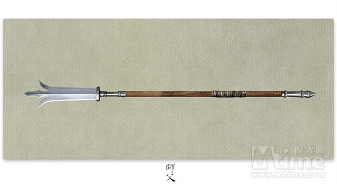
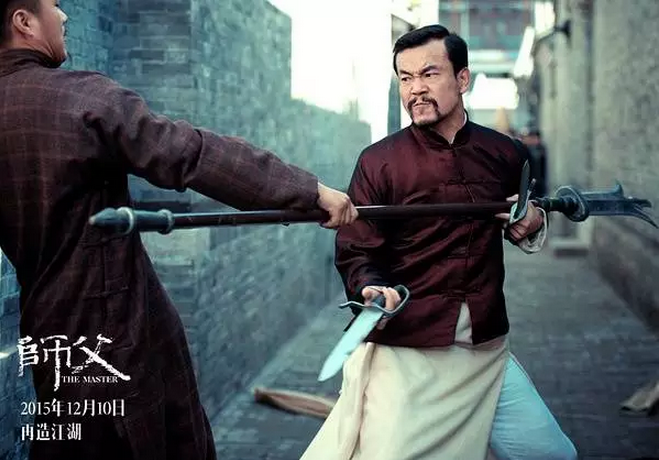
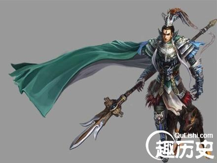
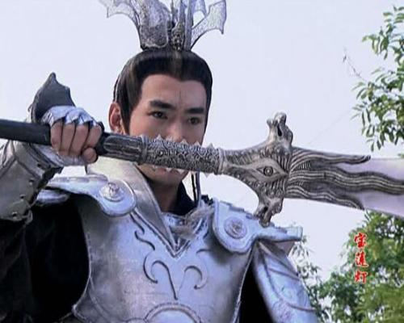
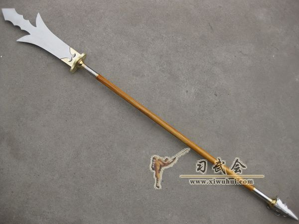
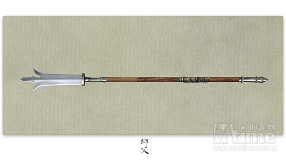
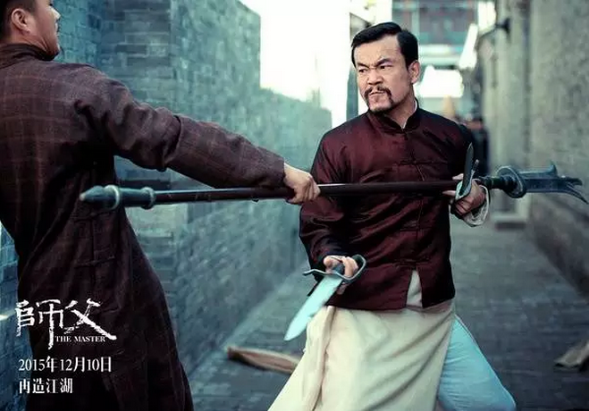
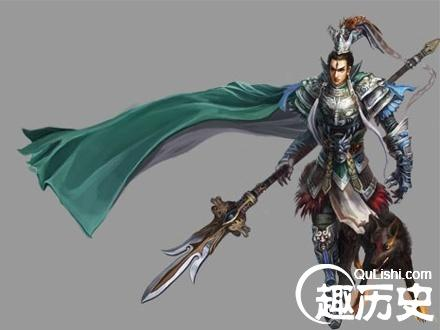
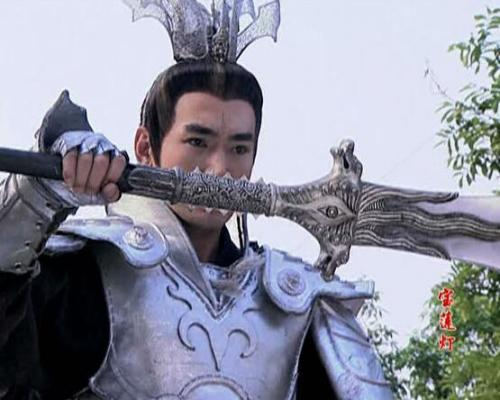
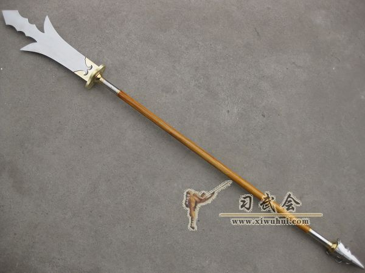

七： 三尖两刃刀
如果对传统神话故事熟悉的话，对这款兵器就不会陌生，二郎神杨戬的主战兵器，因此又称为“二郎刀。”

三尖两刃刀的发展历史比较怪异，一方面他脱胎于大刀的前身——西汉时期的“斩马剑”，另一方面又能跟隋唐时期风靡一时的“陌刀”联系起来，《武经总要》“刀八色”里的“掉刀”也是双刃刀，但三尖两刃刀名称真正确定下来却是在明朝，且同期这款兵器形象上也固定下来。

现今香港较为少家派演练此械，资料所得精武少林拳及山东螳螂拳现在还有传习此械。



如果对传统神话故事熟悉的话，对这款兵器就不会陌生，二郎神杨戬的主战兵器，因此又称为“二郎刀。”

三尖两刃刀的发展历史比较怪异，一方面他脱胎于大刀的前身——西汉时期的“斩马剑”，另一方面又能跟隋唐时期风靡一时的“陌刀”联系起来，《武经总要》“刀八色”里的“掉刀”也是双刃刀，但三尖两刃刀名称真正确定下来却是在明朝，且同期这款兵器形象上也固定下来。

现今香港较为少家派演练此械，资料所得精武少林拳及山东螳螂拳现在还有传习此械。


